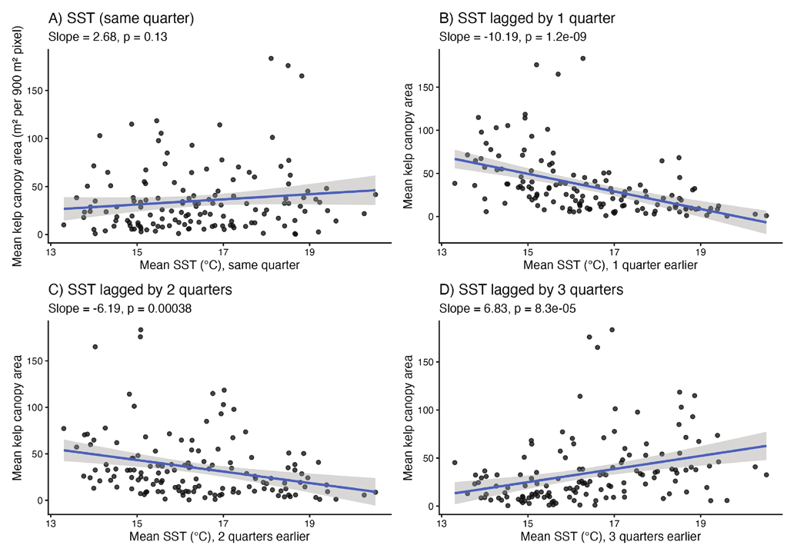

Lagged Giant Kelp Canopy Response to Warming and Dissolved Oxygen in the Southern California Channel Islands
Published · International Journal of High School Research, Nov 2026
I've dived in the Channel Islands kelp forests, so I wanted to know what happens to them when the water warms. Using 35 years of public ocean and satellite data, I found that the kelp canopy shrinks about one season after a warm spell, not right away.

The project
This project came out of diving in the Channel Islands, where I got interested in giant kelp. Giant kelp forests are some of the most productive ecosystems on the coast, and they have become more fragile as the ocean warms. Warmer water also tends to hold less dissolved oxygen, which could add to the stress.
I combined public datasets on sea surface temperature, coastal upwelling, dissolved oxygen, and kelp canopy area for the five northern Channel Islands from 1990 to 2024, aggregated to quarters. I tested long-term trends, the link between temperature and oxygen, and whether kelp responds to warming right away or after a delay.
Built with R / RStudio · public ocean and satellite kelp-canopy data.

What I found
- Sea surface temperature rose steadily over the 35 years; upwelling varied a lot but showed no clear long-term trend.
- Warmer quarters had lower dissolved oxygen.
- Kelp canopy declined most strongly about one quarter after warm conditions, not in the same quarter (β = −10.187, R² = 0.237, p = 1.25 × 10⁻⁹).
- After accounting for temperature, higher oxygen was still linked to more kelp canopy.